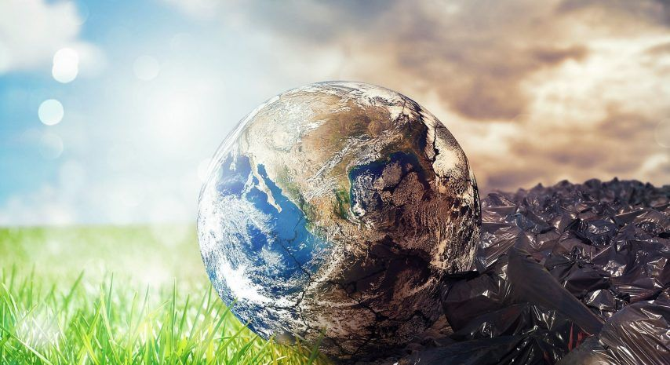

CONCLUSION SOBRE LA CONTAMINACION
La falta de conciencia colectiva acerca de este problema solo ira empeorando las cosas para el planeta en que vivimos y eso es lo paradójico, que no somos capaces de cuidar el lugar que nos permite la vida. La finalidad de este ensayo es para concientizar a las personas sobre el problema de nuestro medio ambiente empezando por no tirar basura en las calles,no quemar, tratar de cuidar el agua.
La importancia de conservar el medio ambiente reside en la propia importancia del medio ambiente, ya que todos vivimos en él. Por tanto, si queremos asegurar nuestra propia supervivencia y bienestar, y del resto de seres vivos, debemos preocuparnos por su cuidado y protección. es un fenómeno que afecta directa e indirectamente la salud de las poblaciones, no sólo de seres humanos, pues también altera el equilibrio de los ecosistemas.
La deforestación causa contaminación en el agua como también parte del calentamiento global, éste, a su vez, genera detrimentos en la calidad de vida de los seres vivos, ocasionando efectos dañinos en los ecosistemas alrededor del mundo. Actualmente, la mayoría de las personas solo ven por sí mismos y su bienestar a veces sin darse cuenta, e impregnan sus conductas de la ideología neoliberal, ocasionando un gran deterioro en el comportamiento social, y por ende, en la educación ambiental.
es imprescindible si se quiere asegurar la supervivencia de la especie humana. De ella depende que las personas sigan con vida, pues se alimentan, beben y viven de ella y de todos sus recursos. El resto de seres vivos tampoco podrían vivir si no fuera por el buen estado de la naturaleza.
Por eso el ser humano debe conocer y cuidar sus interacciones con el medio ambiente para gestionar de manera sostenible los recursos naturales que permiten su crecimiento económico y su desarrollo.
La fauna y la flora son de vital importancia para el medio ambiente ya que poseen una interdependencia que posibilita el equilibrio de las especies y el desarrollo de la biodiversidad.
